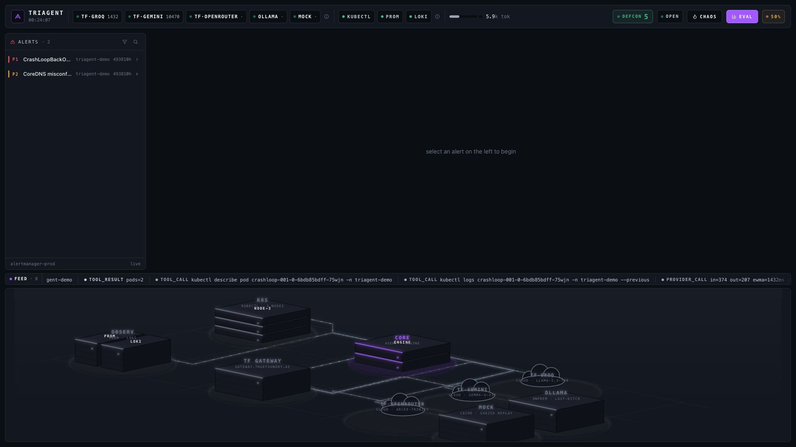
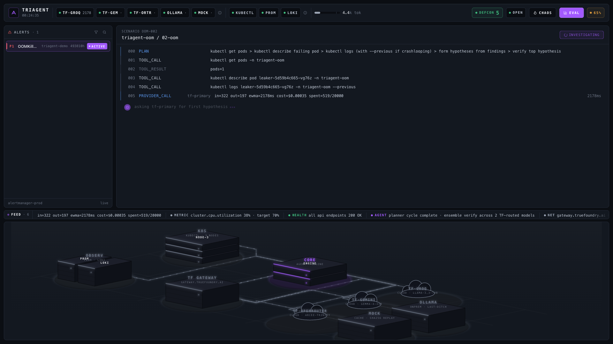
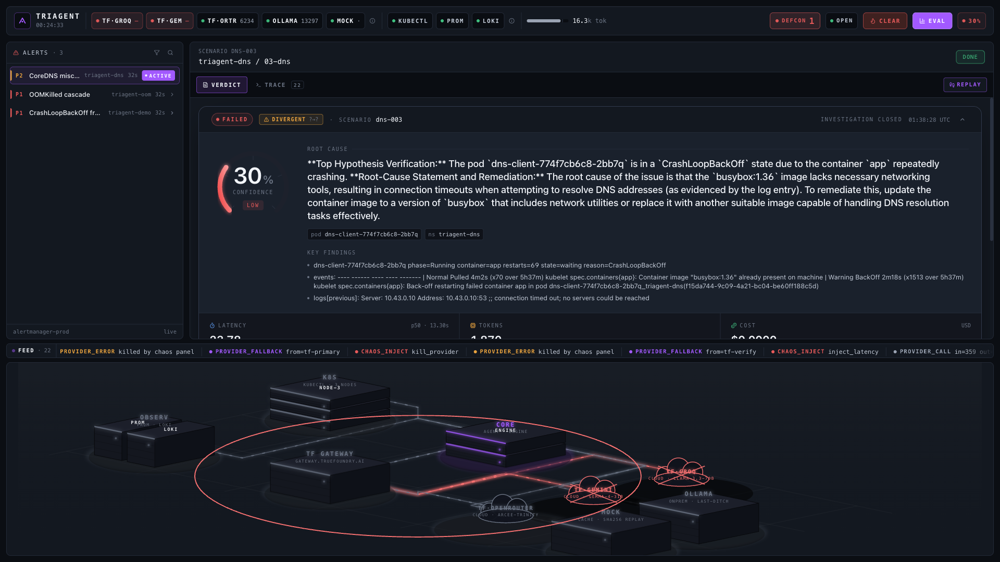
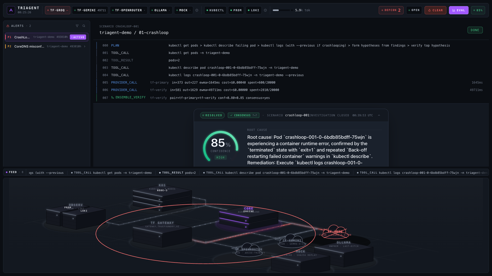
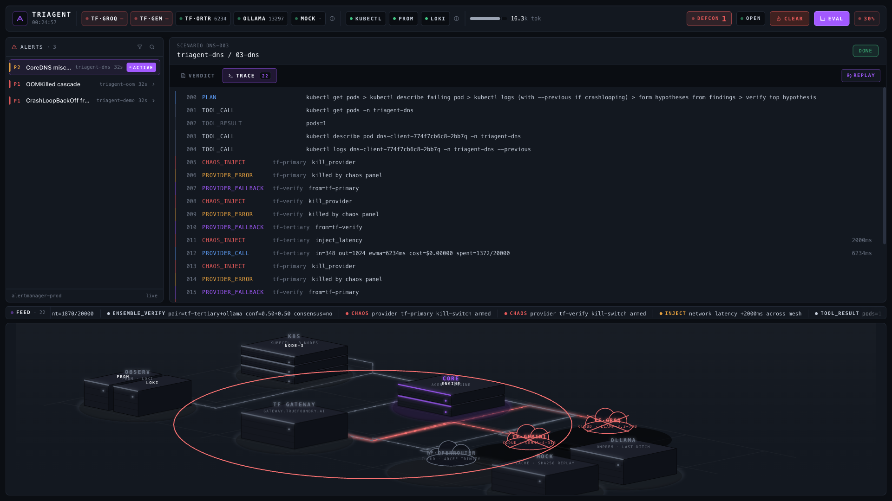
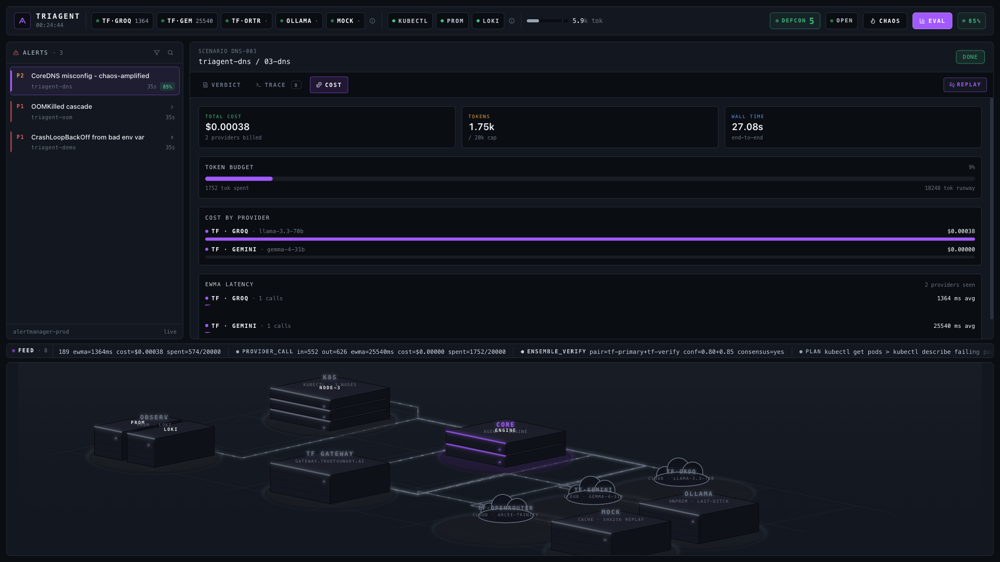
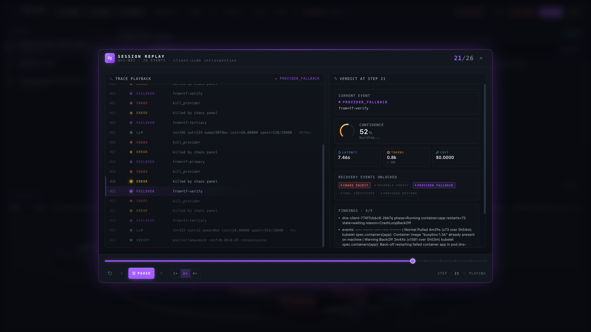
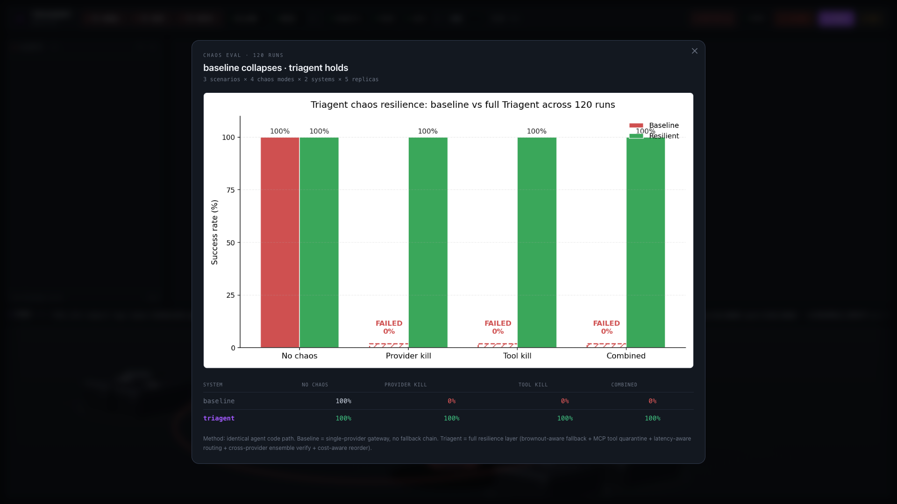

K8S INCIDENT AGENT
·
BUILT ON TRUEFOUNDRY
triagent.warroom · localhost:3000

WAR ROOM · live alerts · ensemble verify · cost-aware routing
triagent.warroom

AGENT THINKING
asking tf-primary for first hypothesis
triagent.warroom

87%
CONSENSUS
tf-primary → tf-verify
triagent.warroom · chaos panel armed

KILL TF·GROQ
· DEFCON 2 · CRITICAL
triagent.warroom · fallback engaged

kill any provider.
the agent keeps walking.
triagent.warroom · cost

PER INVESTIGATION
$0.0004
vs $50/hour SRE time
triagent.warroom · session replay

what if groq had been alive at step 3?
COUNTERFACTUAL REPLAY · TF DOESN'T SHIP THIS
triagent.warroom · chaos eval · 120 runs

0%
→
100%
BASELINE COLLAPSES · TRIAGENT HOLDS
resilient k8s incident response on truefoundry.
github.com/syaugi/triagent
·
DEVNETWORK AI+ML 2026